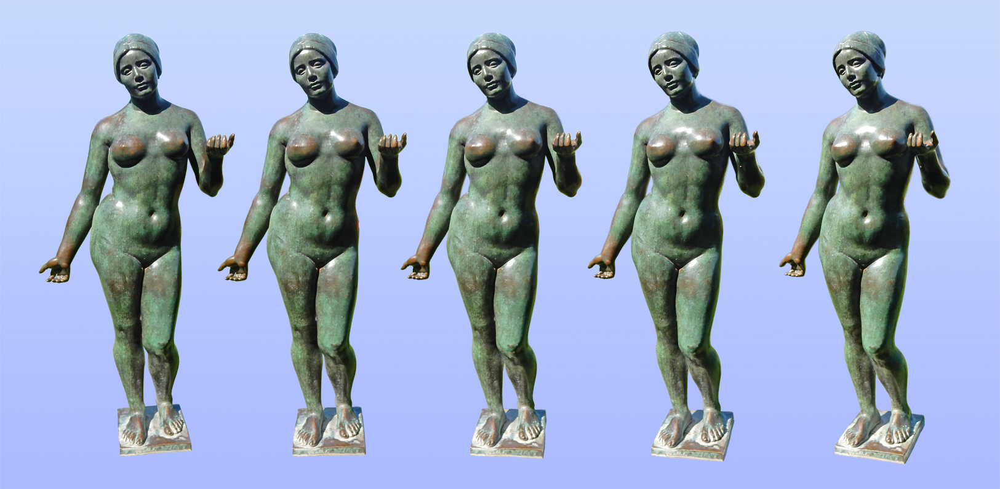
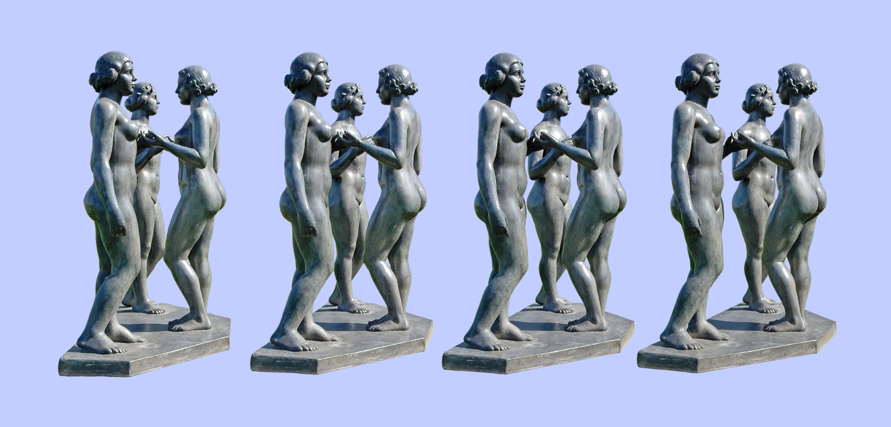
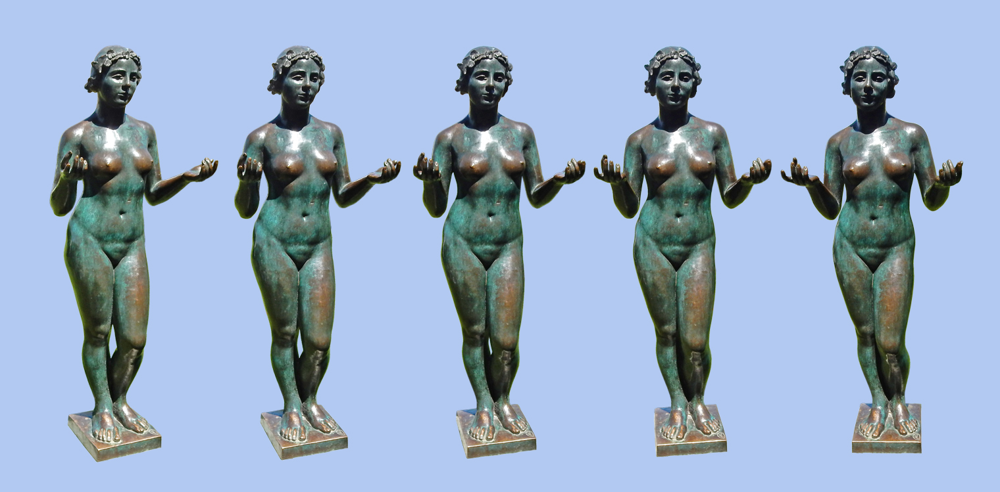
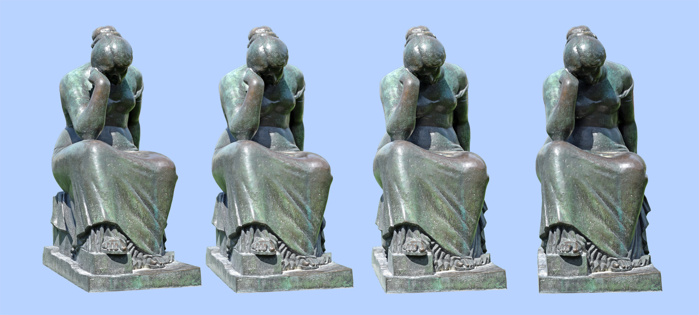

Les Maillol du Carrousel
Le Jardin du Carrousel, à Paris, entre le Palais du Louvre et le Jardin des Tuileries, est un véritable musée de plein air dans lequel on peut admirer une vingtaine de sculptures du sculpteur français Aristide Maillol, né et mort à Banyuls-sur-Mer (1861-1944). L’effet du stéréogramme sur ces sculptures est encore embelli par leur exposition à la lumière directe du soleil.
L’Été
Créée en 1911 pour décorer l’hôtel particulier du collectionneur d’art russe Ivan Morozov, cette statue, symbole féminin de la belle saison, fut commencée par l’étude d’un torse sans membres, Maillol considérant ceux-ci et particulièrement les bras comme une gêne à la bonne vision du profil de l’œuvre. Il l’intitula d’abord L’Été sans bras mais dut la compléter pour le collectionneur. Bronze, hauteur 1,64 m.
Trois nymphes
Ce groupe est également dénommé Trois Grâces et Nymphes de la prairie. Inspirées de l’Antiquité gréco-romaine, les “Charités” grecques, Euphrosine, Thalie et Aglaé, personnifiant la joie, l’abondance et la beauté, éternellement jeunes et belles, devenues les “Grâces” chez les Romains, sont trois nymphes, divinités qui fertilisent la nature, et sont également symbolisées par trois fleurs, la pâquerette, la renoncule et la marjolaine. Maillol commença la sculpture en 1930 par la nymphe centrale et travailla l’œuvre jusque vers 1937. Estimant les jeunes femmes trop “puissantes” pour figurer les Grâces, il préfèra l’appellation Nymphes. Le groupe exposé au jardin du Carrousel a été fondu en 1938, vendu à l’Autriche en 1941 puis ramené en France en 1950. Il ne s’agit donc pas d’une des fontes réalisées en 1964-1965, mais d’un exemplaire coulé du vivant de l’artiste, qui a choisi le plomb car à ses yeux le bronze était d’un aspect trop sombre pour illustrer le thème bucolique et ensoleillé de la scène. Plomb, hauteur 1,56 m.
La Nymphe
Très semblable, tant par son attitude que par ses traits, à la figure centrale du groupe Trois Nymphes, cette nymphe, créée en 1930, en est bien le modèle, de même que les deux autres composantes du groupe avaient elles-mêmes au préalable fait l’objet d’études longuement remaniées par Maillol. Bronze, hauteur 1,55 m.
La Douleur
Créée en 1922 pour le Monument aux morts de Céret, en hommage aux enfants de cette localité des Pyrénées-Orientales morts pendant la Première Guerre mondiale, cette femme solide exprime la douleur de toutes ses consœurs ayant maintenu la commune en vie pendant cette période. Bronze, hauteur 1,54 m.